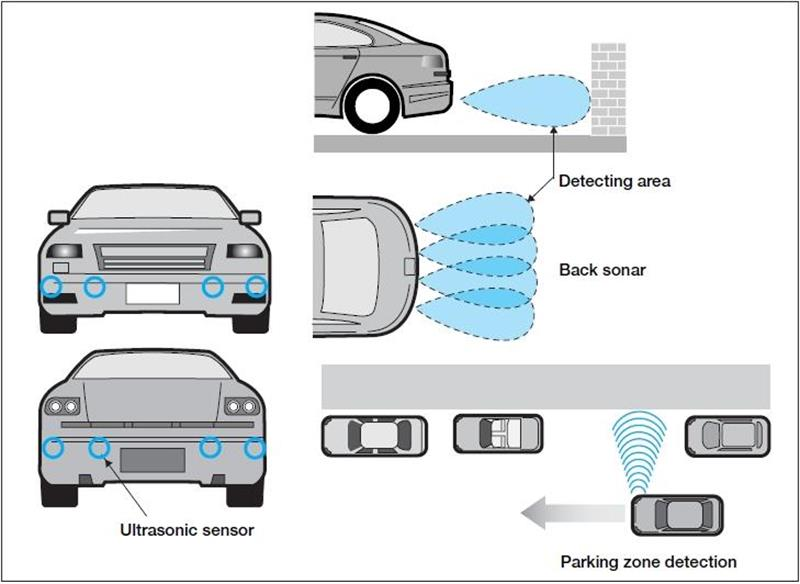
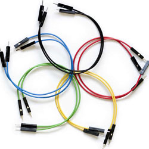

The Test Device¶
HC-SR04 Ultrasonic Sensor¶
{kind=link}
Pins:
- 5V Supply
- Echo pulse output
- Trigger pulse input
- 0V
Cycle:
- Using IO trigger for at least 10us high level signal
- The Module automatically sends eight 40 kHz and detect whether there is a pulse signal back.
- If the signal is read, the time of high output IO duration is the time from sending ultrasonic to returning.

In order to generate the ultrasound you need to set the Trig on a High State for 10 µs. That will send out an 8 cycle sonic burst which will travel at the speed sound and it will be received in the Echo pin. The Echo pin will output the time in microseconds the sound wave traveled.
In order to calculate the distance, take the width of the echo pulse (μs):
- Distance in centimeters: time(μs) / 58
- Distance in inches: time(μs) / 148
The ultrasonic distance sensor can be used in a wide variety of applications. Many people utilize the sensor to build projects that can move around and avoid obstacles, accurately measure distances, and notify about incoming objects.
Car backup sensors and high-end side mirrors use ultrasonic sensors to notifiy of nearby cars and objects. Sound waves above 20kHz (well above human hearing) are sent out in pulses and then the reflection of these pulses are timed and then used to measure distances. Sometimes these pulses are in excess of 100dB to ensure clear reception (wow!).
{kind=link}
Breadboard¶
The breadboard is a re-useable platform used for mounting components. It consists of a number of small holes that are interconnected beneath the surface. When components are pushed into these holes, they create circuit connections, thereby avoiding the need for soldering.
LEDs¶
LEDs or light-emitting diodes are a two-lead semiconductor light source. When a suitable voltage is applied to the leads, electrons are able to recombine with electron holes within the device, releasing energy in the form of photons. The different colors seen in our project are due to the tinting of the led enclosure.
Jumper Wires¶
Fairly self-explanatory, jumper wires are used to make connections within the breadboard and to the arduino device itself. They consist of a length of wire with fixed ends terminating in plugs.
Piezo Buzzer¶
The buzzer consists of a small piezoelectric crystal in a plastic enclosure. When an electrical current is run across the crystal, it flexes in response. By rapidly toggling the current, the crystal flexes and relaxes, displacing air in the plastic enclosure and creating a buzzing sound. The tone of the buzzing sound can be changed by modifying how quickly the current toggles.